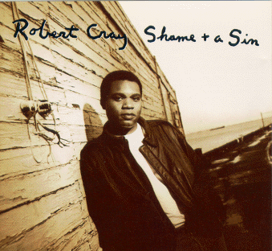

Shame + a Sin - Robert Cray

 Songs on the CD
Songs on the CD
- 1040 BLues (R. Cray)
- Some Pain, Some Shame (R. Cray)
- I Shiver (R. Cray)
- You're Gonna Need Me (A. King)
- Don't Break This Ring (R. Cray)
- Stay Go (R. Cray, J. Pugh, K. Sevareid)
- Leave Well Enough Alone (R. Cray)
- Passing By (R. Cray)
- I'm Just Lucky That Way (J. Pugh, R. Estrin, D. Woodruff)
- Up And Down (R. Cray, J. Pugh)
Musicians:
Robert Cray - guitar, vocals
Kevin Hayes - drums
Jim Pugh - upright piano, xylophone and organ
Karl Sevareid - bass
Edward Manion - tenor sax, baritone sax
Mark Pender - trumpet
Albert Collins - guitar on "You're Gonna Need Me"
Harmonica on "1040 Blues" - unknown
Horn arrangements by the Miami Hors - Mark Pender and Edward Manion
Some brief credits:
© 1998 PolyGram Records
Producer - Robert Cray
Direction - Mike Kappus - The Rosebud Agency
Art Director - Michael Bays
Photography - James Fee
Design - Jeffery Schulz
Back to my Cray page
Created: 12/4/95
Mod: 8/22/99
By: rwhiffen